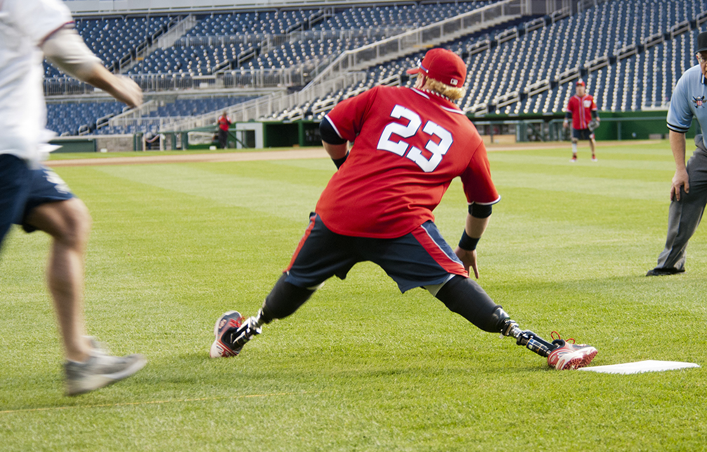
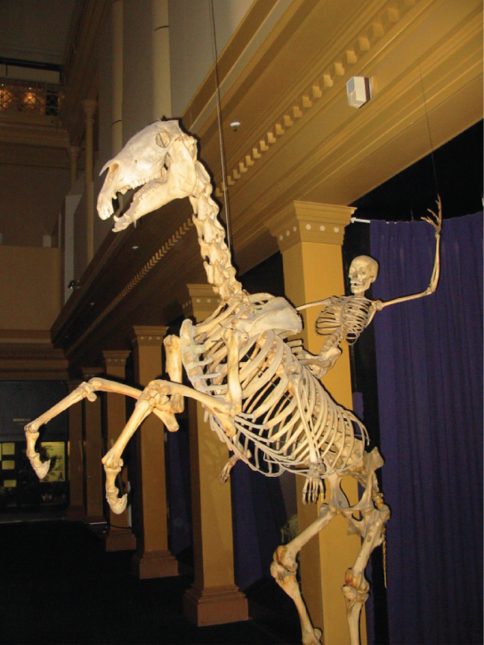
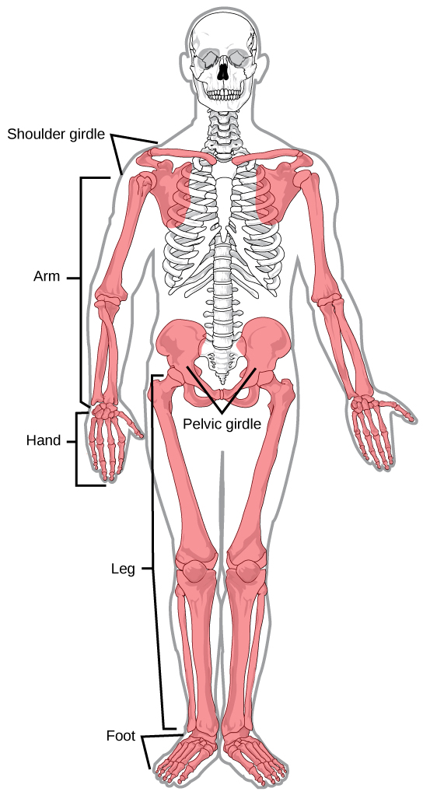
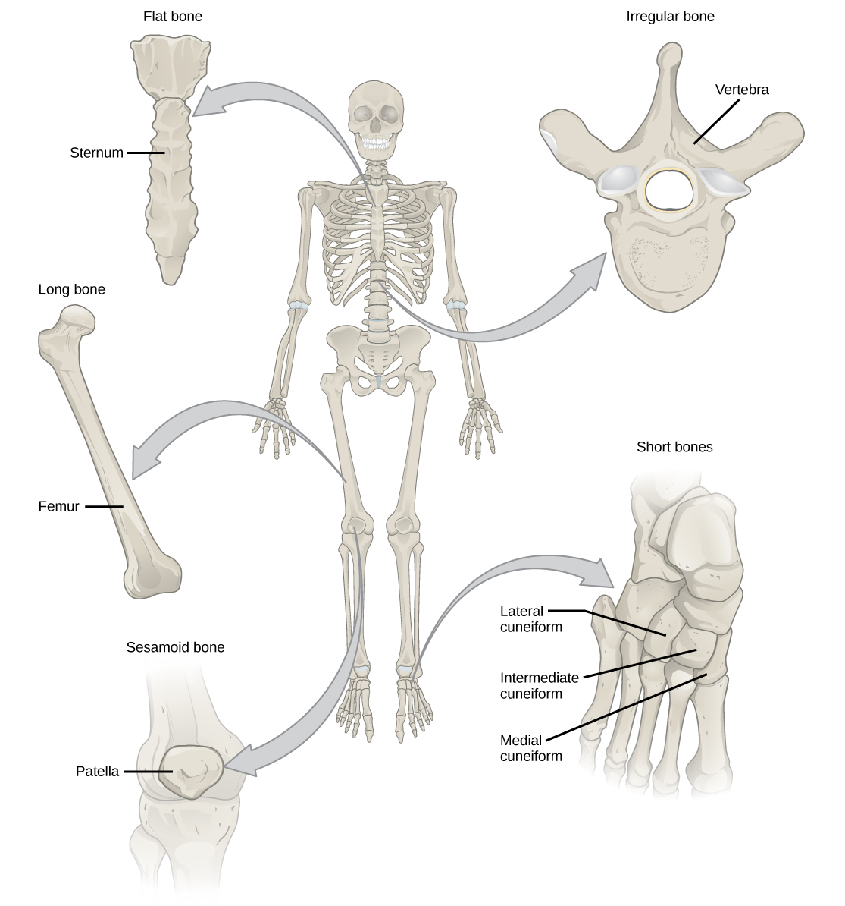
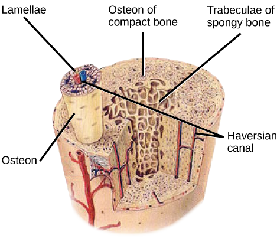
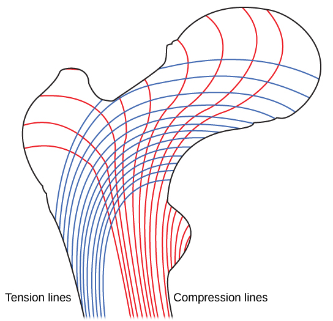
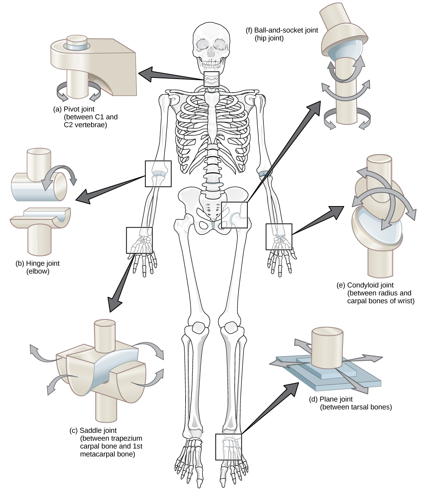
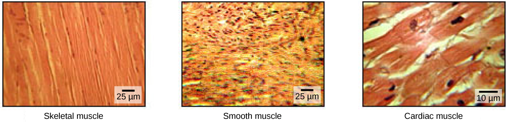
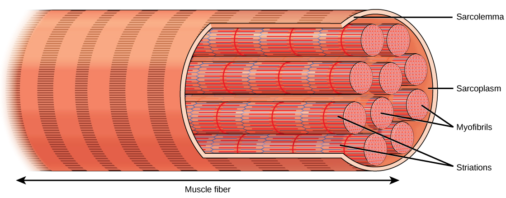

Figure 38.1.
Improvements in the design of prostheses have allowed for a wider range of activities in recipients. (credit: modification of work by Stuart Grout)
The muscular and skeletal systems provide support to the body and allow for a wide range of movement. The bones of the skeletal system protect the body’s internal organs and support the weight of the body. The muscles of the muscular system contract and pull on the bones, allowing for movements as diverse as standing, walking, running, and grasping items.
Injury or disease affecting the musculoskeletal system can be very debilitating. In humans, the most common musculoskeletal diseases worldwide are caused by malnutrition. Ailments that affect the joints are also widespread, such as arthritis, which can make movement difficult and—in advanced cases—completely impair mobility. In severe cases in which the joint has suffered extensive damage, joint replacement surgery may be needed.
Progress in the science of prosthesis design has resulted in the development of artificial joints, with joint replacement surgery in the hips and knees being the most common. Replacement joints for shoulders, elbows, and fingers are also available. Even with this progress, there is still room for improvement in the design of prostheses. The state-of-the-art prostheses have limited durability and therefore wear out quickly, particularly in young or active individuals. Current research is focused on the use of new materials, such as carbon fiber, that may make prostheses more durable.
An endoskeleton is a skeleton that consists of hard, mineralized structures located within the soft tissue of organisms. Endoskeletons provide support for the body, protect internal organs, and allow for movement through contraction of muscles attached to the skeleton.

Figure 38.4.
The skeletons of humans and horses are examples of endoskeletons. (credit: Ross Murphy)
The human skeleton is an endoskeleton that consists of 206 bones in the adult. It has five main functions: providing support to the body, storing minerals and lipids, producing blood cells, protecting internal organs, and allowing for movement. The skeletal system in vertebrates is divided into the axial skeleton (which consists of the skull, vertebral column, and rib cage), and the appendicular skeleton (which consists of the shoulders, limb bones, the pectoral girdle, and the pelvic girdle).
Link to Learning
Visit the interactive body site to build a virtual skeleton: select "skeleton" and click through the activity to place each bone.
The axial skeleton forms the central axis of the body and includes the bones of the skull, ossicles of the middle ear, hyoid bone of the throat, vertebral column, and the thoracic cage (ribcage) (Figure 38.5). The function of the axial skeleton is to provide support and protection for the brain, the spinal cord, and the organs in the ventral body cavity. It provides a surface for the attachment of muscles that move the head, neck, and trunk, performs respiratory movements, and stabilizes parts of the appendicular skeleton.
Figure 38.5.
The axial skeleton consists of the bones of the skull, ossicles of the middle ear, hyoid bone, vertebral column, and rib cage. (credit: modification of work by Mariana Ruiz Villareal)
The appendicular skeleton is composed of the bones of the upper limbs (which function to grasp and manipulate objects) and the lower limbs (which permit locomotion). It also includes the pectoral girdle, or shoulder girdle, that attaches the upper limbs to the body, and the pelvic girdle that attaches the lower limbs to the body (Figure 38.10).

Figure 38.10.
The appendicular skeleton is composed of the bones of the pectoral limbs (arm, forearm, hand), the pelvic limbs (thigh, leg, foot), the pectoral girdle, and the pelvic girdle. (credit: modification of work by Mariana Ruiz Villareal)
The mineral salts primarily include hydroxyapatite, a mineral formed from calcium phosphate. Calcification is the process of deposition of mineral salts on the collagen (protein) fiber matrix that crystallizes and hardens the tissue. The process of calcification only occurs in the presence of collagen fibers.
The bones of the human skeleton are classified by their shape: long bones, short bones, flat bones, sutural bones, sesamoid bones, and irregular bones (Figure 38.16).

Figure 38.16.
Shown are different types of bones: flat, irregular, long, short, and sesamoid.
Bones are considered organs because they contain various types of tissue, such as blood, connective tissue, nerves, and bone tissue. Osteocytes, the living cells of bone tissue, form the mineral matrix of bones. There are two types of bone tissue: compact and spongy.
Compact bone (or cortical bone) forms the hard external layer of all bones and surrounds the medullary cavity, or bone marrow. It provides protection and strength to bones. Compact bone tissue consists of units called osteons or Haversian systems. Osteons are cylindrical structures that contain a mineral matrix and living osteocytes connected by canaliculi, which transport blood. They are aligned parallel to the long axis of the bone. Each osteon consists of lamellae, which are layers of compact matrix that surround a central canal called the Haversian canal. The Haversian canal (osteonic canal) contains the bone’s blood vessels and nerve fibers (Figure 38.19). Osteons in compact bone tissue are aligned in the same direction along lines of stress and help the bone resist bending or fracturing. Therefore, compact bone tissue is prominent in areas of bone at which stresses are applied in only a few directions.
Art Connection

Figure 38.19.
Compact bone tissue consists of osteons that are aligned parallel to the long axis of the bone, and the Haversian canal that contains the bone’s blood vessels and nerve fibers. The inner layer of bones consists of spongy bone tissue. The small dark ovals in the osteon represent the living osteocytes. (credit: modification of work by NCI, NIH)
Which of the following statements about bone tissue is false?
Compact bone tissue is made of cylindrical osteons that are aligned such that they travel the length of the bone.
Haversian canals contain blood vessels only.
Haversian canals contain blood vessels and nerve fibers.
Spongy tissue is found on the interior of the bone, and compact bone tissue is found on the exterior.
Whereas compact bone tissue forms the outer layer of all bones, spongy bone or cancellous bone forms the inner layer of all bones. Spongy bone tissue does not contain osteons that constitute compact bone tissue. Instead, it consists of trabeculae, which are lamellae that are arranged as rods or plates. Red bone marrow is found between the trabuculae. Blood vessels within this tissue deliver nutrients to osteocytes and remove waste. The red bone marrow of the femur and the interior of other large bones, such as the ileum, forms blood cells.
Spongy bone reduces the density of bone and allows the ends of long bones to compress as the result of stresses applied to the bone. Spongy bone is prominent in areas of bones that are not heavily stressed or where stresses arrive from many directions. The epiphyses of bones, such as the neck of the femur, are subject to stress from many directions. Imagine laying a heavy framed picture flat on the floor. You could hold up one side of the picture with a toothpick if the toothpick was perpendicular to the floor and the picture. Now drill a hole and stick the toothpick into the wall to hang up the picture. In this case, the function of the toothpick is to transmit the downward pressure of the picture to the wall. The force on the picture is straight down to the floor, but the force on the toothpick is both the picture wire pulling down and the bottom of the hole in the wall pushing up. The toothpick will break off right at the wall.
The neck of the femur is horizontal like the toothpick in the wall. The weight of the body pushes it down near the joint, but the vertical diaphysis of the femur pushes it up at the other end. The neck of the femur must be strong enough to transfer the downward force of the body weight horizontally to the vertical shaft of the femur (Figure 38.20).

Figure 38.20.
Trabeculae in spongy bone are arranged such that one side of the bone bears tension and the other withstands compression.
Link to Learning
View micrographs of musculoskeletal tissues as you review the anatomy.
The point at which two or more bones meet is called a joint, or articulation. Joints are responsible for movement, such as the movement of limbs, and stability, such as the stability found in the bones of the skull.
There are two ways to classify joints: based on their structure or based on their function. The structural classification divides joints into fibrous, cartilaginous, and synovial joints depending on the material composing the joint and the presence or absence of a cavity in the joint. The bones of fibrous joints are held together by fibrous connective tissue. There is no cavity, or space, present between the bones, so most fibrous joints do not move at all, or are only capable of minor movements. The joints between the bones in the skull and between the teeth and the bone of their sockets are examples of fibrous joints (Figure 16.16a).
Cartilaginous joints are joints in which the bones are connected by cartilage (Figure 16.16b). An example is found at the joints between vertebrae, the so-called “disks” of the backbone. Cartilaginous joints allow for very little movement.
Synovial joints are the only joints that have a
space between the adjoining bones (Figure 16.16c).
This space is referred to as the joint cavity and is filled with
fluid. The fluid lubricates the joint, reducing friction between
the bones and allowing for greater movement. The ends of the bones
are covered with cartilage and the entire joint is surrounded by a
capsule. Synovial joints are capable of the greatest movement of
the joint types. Knees, elbows, and shoulders are examples of
synovial joints.

Figure 38.26.
Different types of joints allow different types of movement. Planar, hinge, pivot, condyloid, saddle, and ball-and-socket are all types of synovial joints.
Link to LearningWatch this animation
showing the six types of synovial joints.
Question to answer:

Figure 38.33.
The body contains three types of muscle tissue: skeletal muscle, smooth muscle, and cardiac muscle, visualized here using light microscopy. Smooth muscle cells are short, tapered at each end, and have only one plump nucleus in each. Cardiac muscle cells are branched and striated, but short. The cytoplasm may branch, and they have one nucleus in the center of the cell. (credit: modification of work by NCI, NIH; scale-bar data from Matt Russell)
Skeletal muscle tissue forms skeletal muscles, which attach to bones or skin and control locomotion and any movement that can be consciously controlled. Because it can be controlled by thought, skeletal muscle is also called voluntary muscle. Skeletal muscles are long and cylindrical in appearance; when viewed under a microscope, skeletal muscle tissue has a striped or striated appearance. The striations are caused by the regular arrangement of contractile proteins (actin and myosin). Actin is a globular contractile protein that interacts with myosin for muscle contraction. Skeletal muscle also has multiple nuclei present in a single cell.
Smooth muscle tissue occurs in the walls of hollow organs such as the intestines, stomach, and urinary bladder, and around passages such as the respiratory tract and blood vessels. Smooth muscle has no striations, is not under voluntary control, has only one nucleus per cell, is tapered at both ends, and is called involuntary muscle.
Cardiac muscle tissue is only found in the heart, and cardiac contractions pump blood throughout the body and maintain blood pressure. Like skeletal muscle, cardiac muscle is striated, but unlike skeletal muscle, cardiac muscle cannot be consciously controlled and is called involuntary muscle. It has one nucleus per cell, is branched, and is distinguished by the presence of intercalated disks.
Each skeletal muscle fiber is a skeletal muscle cell. These cells are incredibly large, with diameters of up to 100 µm and lengths of up to 30 cm. The plasma membrane of a skeletal muscle fiber is specialized and called the sarcolemma. The sarcolemma is the site of action potential conduction (like the cell membrane of neurons), which triggers muscle contraction. Within each muscle fiber are myofibrils—long cylindrical structures that lie parallel to the muscle fiber. Myofibrils run the entire length of the muscle fiber, and because they are only approximately 1.2 µm in diameter, hundreds to thousands can be found inside one muscle fiber. They attach to the sarcolemma at their ends, so that as myofibrils shorten, the entire muscle cell contracts (Figure 38.34).

Figure 38.34.
A skeletal muscle cell is surrounded by a plasma membrane called the sarcolemma with a cytoplasm called the sarcoplasm. A muscle fiber is composed of many fibrils, packaged into orderly units.
The striated appearance of skeletal muscle tissue is a result of
repeating bands of the proteins actin and myosin that are present
along the length of myofibrils. Dark A bands and light I bands
repeat along myofibrils, and the alignment of myofibrils in the
cell causes the entire cell to appear striated or banded.
Each I band has a dense line running vertically through the middle called a Z disc or Z line. The Z discs mark the border of units called sarcomeres, which are the functional units of skeletal muscle. One sarcomere is the space between two consecutive Z discs. A myofibril is composed of many sarcomeres running along its length, and as the sarcomeres individually contract, the myofibrils and muscle cells shorten (Figure 38.35).

Figure 38.35.
A sarcomere is the region from one Z line to the next Z line. Many sarcomeres are present in a myofibril, resulting in the striation pattern characteristic of skeletal muscle.
Myofibrils are composed of smaller structures called myofilaments.
There are two main types of filaments: thick filaments and thin
filaments. Thick and thin filaments are composed of proteins.
Thick filaments are composed of the protein myosin. The tail of a
myosin molecule connects with other myosin molecules to form the
central region of a thick filament near the M line, whereas the
heads align on either side of the thick filament where the thin
filaments overlap. The primary component of thin filaments is the
actin protein.
Link to Learning
View this animation showing the organization of muscle fibers.
For a muscle cell to contract, the sarcomere must shorten. However, thick and thin filaments—the components of sarcomeres—do not shorten. Instead, they slide by one another, causing the sarcomere to shorten while the filaments remain the same length. The sliding filament theory of muscle contraction was developed to fit the differences observed in the named bands on the sarcomere at different degrees of muscle contraction and relaxation. The mechanism of contraction is the binding of myosin to actin, forming cross-bridges that generate filament movement (Figure 38.36).
![Part A of the
illustration shows a relaxed muscle fiber. Two zigzagging Z
lines extend from top to bottom. Thin actin filaments extend
left and right from each Z line. Between the Z lines is a
vertical M line. Thick myosin filaments extend left and right
from the M line. The thick and thin filaments partially overlap.
The A band represents the length that the thick filaments extend
from both sides of the M line. The I band represents the part of
the thin filaments that does not overlap with the thick
filaments. Part B shows a contracted muscle fiber. In the
contracted fiber, the thick and thin filaments completely
overlap. The A band is the same length as in the uncontracted
muscle, but the I band has shrunken to the width of the Z line.](m44788/Figure_38_04_04.jpg)
Figure 38.36.
When (a) a sarcomere (b) contracts, the Z lines move closer together and the I band gets smaller. The A band stays the same width and, at full contraction, the thin filaments overlap.
When a sarcomere shortens, some regions shorten whereas others stay the same length. When a muscle contracts, the distance between the Z discs is reduced. The H zone—the central region of the A zone—contains only thick filaments and is shortened during contraction. The I band contains only thin filaments and also shortens. The A band does not shorten—it remains the same length—but A bands of different sarcomeres move closer together during contraction, eventually disappearing. Thin filaments are pulled by the thick filaments toward the center of the sarcomere until the Z discs approach the thick filaments. The zone of overlap, in which thin filaments and thick filaments occupy the same area, increases as the thin filaments move inward.
Questions to answer:
When a muscle contracts the sarcomere shortens. How is this
achieved?
Which is smaller and more numerous (and why)? Myofibrils or
myofillaments?
Why does the H zone and I band appear to shorten when a muscle
contracts (in your won words)?
Why does the A band remain unchanged in appearance during muscle
contraction (in your own words)?
The motion of muscle shortening occurs as myosin heads bind to actin and pull the actin inwards. This action requires energy, which is provided by ATP. Myosin binds to actin at a binding site on the globular actin protein. Myosin has another binding site for ATP at which enzymatic activity hydrolyzes ATP to ADP, releasing an inorganic phosphate molecule and energy.
ATP binding causes myosin to release actin, allowing actin and myosin to detach from each other. After this happens, the newly bound ATP is converted to ADP and inorganic phosphate, Pi. The enzyme at the binding site on myosin is called ATPase. The energy released during ATP hydrolysis changes the angle of the myosin head into a “cocked” (high energy) position. The myosin head is then in a position for further movement, possessing potential energy, but ADP and Pi are still attached. If actin binding sites are covered and unavailable, the myosin will remain in the high energy configuration with ATP hydrolyzed, but still attached.
If the actin binding sites are uncovered, a cross-bridge will form; that is, the myosin head spans the distance between the actin and myosin molecules. Pi is then released, allowing myosin to expend the stored energy as a conformational change. The myosin head moves toward the M line, pulling the actin along with it. As the actin is pulled, the filaments move approximately 10 nm toward the M line. This movement is called the power stroke, as it is the step at which force is produced. As the actin is pulled toward the M line, the sarcomere shortens and the muscle contracts.
When the myosin head is “cocked,” it contains energy and is in a high-energy configuration. This energy is expended as the myosin head moves through the power stroke; at the end of the power stroke, the myosin head is in a low-energy position. After the power stroke, ADP is released; however, the cross-bridge formed is still in place, and actin and myosin are bound together. ATP can then attach to myosin, myosin detaches from actin, which allows the cross-bridge cycle to start again and further muscle contraction can occur (Figure 38.37).
Link to Learning
Watch this video explaining how a muscle contraction is signaled.
Art Connection
![Illustration shows two
actin filaments coiled with tropomyosin in a helix, sitting
beside a myosin filament. Each actin filament is made of round
actin subunits linked in a chain. A bulbous myosin head with ADP
and Pi attached sticks up from the myosin filament. The
contraction cycle begins when calcium binds to the actin
filament, allowing the myosin head to from a cross-bridge.
During the power stroke, the myosin head bends and ADP and
phosphate are released. As a result, the actin filament moves
relative to the myosin filament. A new molecule of ATP binds to
the myosin head, causing it to detach. The ATP hydrolyzes to ADP
and Pi, returning the myosin head to the cocked position.](m44788/Figure_38_04_05.png)
Figure 38.37.
The cross-bridge muscle contraction cycle, which is triggered by Ca2+ binding to the actin active site, is shown. With each contraction cycle, actin moves relative to myosin.
Which of the following statements about muscle contraction is true?
The power stroke occurs when ATP is hydrolyzed to ADP and phosphate.
The power stroke occurs when ADP and phosphate dissociate from the myosin head.
The power stroke occurs when ADP and phosphate dissociate from the actin active site.
The power stroke occurs when Ca2+ binds the calcium head.
Link to Learning
View this animation of the cross-bridge muscle contraction.
When a muscle is in a resting state, actin and myosin are separated. To keep actin from binding to the active site on myosin, regulatory proteins block the molecular binding sites. Tropomyosin blocks myosin binding sites on actin molecules, preventing cross-bridge formation and preventing contraction in a muscle without nervous input. Troponin binds to tropomyosin and helps to position it on the actin molecule; it also binds calcium ions.
To enable a muscle contraction, tropomyosin must change conformation, uncovering the myosin-binding site on an actin molecule and allowing cross-bridge formation. This can only happen in the presence of calcium, which is kept at extremely low concentrations in the sarcoplasm. If present, calcium ions bind to troponin, causing conformational changes in troponin that allow tropomyosin to move away from the myosin binding sites on actin. Once the tropomyosin is removed, a cross-bridge can form between actin and myosin, triggering contraction. Cross-bridge cycling continues until Ca2+ ions and ATP are no longer available and tropomyosin again covers the binding sites on actin.
Like neuronal cells, muscle cells generate and transmit
electrical signals. The details of how muscle cells generate and
transmit action potentials and establish and maintain a resting
membrane potentials (-70 mv) can (and should) be reviewed in the
nervous system chapter.
Excitation–contraction coupling is the link (transduction) between the action potential generated in the sarcolemma and the start of a muscle contraction. The trigger for calcium release from the sarcoplasmic reticulum into the sarcoplasm is a neural signal. Each skeletal muscle fiber is controlled by a motor neuron, which conducts signals from the brain or spinal cord to the muscle. The area of the sarcolemma on the muscle fiber that interacts with the neuron is called the motor end plate. The end of the neuron’s axon is called the synaptic terminal, and it does not actually contact the motor end plate. A small space called the synaptic cleft separates the synaptic terminal from the motor end plate. Electrical signals travel along the neuron’s axon, which branches through the muscle and connects to individual muscle fibers at a neuromuscular junction.
Communication occurs between nerves and muscles through neurotransmitters. Neuron action potentials cause the release of neurotransmitters from the synaptic terminal into the synaptic cleft, where they can then diffuse across the synaptic cleft and bind to a receptor molecule on the motor end plate. The motor end plate possesses junctional folds—folds in the sarcolemma that create a large surface area for the neurotransmitter to bind to receptors. The receptors are actually sodium channels that open to allow the passage of Na+ into the cell when they receive neurotransmitter signal.
Acetylcholine (ACh) is a neurotransmitter released by motor neurons that binds to receptors in the motor end plate. Once released by the synaptic terminal, ACh diffuses across the synaptic cleft to the motor end plate, where it binds with ACh receptors. As a neurotransmitter binds, these ion channels open, and Na+ ions cross the membrane into the muscle cell. This reduces the voltage difference between the inside and outside of the cell (depolarization). As ACh binds at the motor end plate, this depolarization is called an end-plate potential. The depolarization then spreads along the sarcolemma, creating an action potential as sodium channels adjacent to the initial depolarization site sense the change in voltage and open. The action potential moves across the entire cell, creating a wave of depolarization.
ACh is broken down by the enzyme acetylcholinesterase (AChE) into acetyl and choline. AChE resides in the synaptic cleft, breaking down ACh so that it does not remain bound to ACh receptors, which would cause unwanted extended muscle contraction (Figure 38.38).
Art Connection
![There are four steps
in the start of a muscle contraction. Step 1: Acetylcholine
released from synaptic vesicles in the axon terminal binds to
receptors on the muscle cell plasma membrane. Step 2: An action
potential is initiated that travels down the T tubule. Step 3:
Calcium ions are released from the sarcoplasmic reticulum in
response to the change in voltage. Step 4: Calcium ions bind to
troponin, exposing active sites on actin. Cross-bridge formation
occurs and muscles contract. Three additional steps are part of
the end of a muscle contraction. Step 5: Acetylcholine is
removed from the synaptic cleft by acetylcholinesterase. Step 6:
Calcium ions are transported back into the sarcoplasmic
reticulum. Step 7: Tropomyosin covers active sites on actin
preventing cross-bridge formation, so the muscle contraction
ends.](m44788/Figure_38_04_06f.png)
Figure 38.38.
This diagram shows excitation-contraction coupling in a skeletal muscle contraction. The sarcoplasmic reticulum is a specialized endoplasmic reticulum found in muscle cells.
Neural control initiates the formation of actin–myosin cross-bridges, leading to the sarcomere shortening involved in muscle contraction. These contractions extend from the muscle fiber through connective tissue to pull on bones, causing skeletal movement. The pull exerted by a muscle is called tension, and the amount of force created by this tension can vary. This enables the same muscles to move very light objects and very heavy objects. In individual muscle fibers, the amount of tension produced depends on the cross-sectional area of the muscle fiber and the frequency of neural stimulation.
The number of cross-bridges formed between actin and myosin determine the amount of tension that a muscle fiber can produce. Cross-bridges can only form where thick and thin filaments overlap, allowing myosin to bind to actin. If more cross-bridges are formed, more myosin will pull on actin, and more tension will be produced.
The ideal length of a sarcomere during production of maximal tension occurs when thick and thin filaments overlap to the greatest degree. If a sarcomere at rest is stretched past an ideal resting length, thick and thin filaments do not overlap to the greatest degree, and fewer cross-bridges can form. This results in fewer myosin heads pulling on actin, and less tension is produced. As a sarcomere is shortened, the zone of overlap is reduced as the thin filaments reach the H zone, which is composed of myosin tails. Because it is myosin heads that form cross-bridges, actin will not bind to myosin in this zone, reducing the tension produced by this myofiber. If the sarcomere is shortened even more, thin filaments begin to overlap with each other—reducing cross-bridge formation even further, and producing even less tension. Conversely, if the sarcomere is stretched to the point at which thick and thin filaments do not overlap at all, no cross-bridges are formed and no tension is produced. This amount of stretching does not usually occur because accessory proteins, internal sensory nerves, and connective tissue oppose extreme stretching.
The primary variable determining force production is the number of myofibers within the muscle that receive an action potential from the neuron that controls that fiber. When using the biceps to pick up a pencil, the motor cortex of the brain only signals a few neurons of the biceps, and only a few myofibers respond. In vertebrates, each myofiber responds fully if stimulated. When picking up a piano, the motor cortex signals all of the neurons in the biceps and every myofiber participates. This is close to the maximum force the muscle can produce. As mentioned above, increasing the frequency of action potentials (the number of signals per second) can increase the force a bit more, because the tropomyosin is flooded with calcium.
when a bone moves away from the midline of the body
(AChE) enzyme that breaks down ACh into acetyl and choline
globular contractile protein that interacts with myosin for muscle contraction
movement of the limbs inward after abduction
joint that allows slight movement; includes syndesmoses and symphyses
produced when the angle between the bones of a joint changes
composed of the bones of the upper limbs, which function to grasp and manipulate objects, and the lower limbs, which permit locomotion
increase in the diameter of bones by the addition of bone tissue at the surface of bones
any place where two bones are joined
(also, middle ear) transduces sounds from the air into vibrations in the fluid-filled cochlea
forms the central axis of the body and includes the bones of the skull, the ossicles of the middle ear, the hyoid bone of the throat, the vertebral column, and the thoracic cage (ribcage)
joint with a rounded, ball-like end of one bone fitting into a cuplike socket of another bone
replacement of old bone tissue by new bone tissue
(also, osseous tissue) connective tissue that constitutes the endoskeleton
process of deposition of mineral salts in the collagen fiber matrix that crystallizes and hardens the tissue
tissue muscle tissue found only in the heart; cardiac contractions pump blood throughout the body and maintain blood pressure
eight bones that comprise the wrist
joint in which the bones are connected by cartilage
movement of a limb in a circular motion.
S-shaped bone that positions the arms laterally
forms the hard external layer of all bones
oval-shaped end of one bone fitting into a similarly oval-shaped hollow of another bone
hip bone
one of eight bones that form the cranial cavity that encloses the brain and serves as an attachment site for the muscles of the head and neck
movement downward of a bone, such as after the shoulders are shrugged and the scapulae return to their normal position from an elevated position; opposite of elevation
central shaft of bone, contains bone marrow in a marrow cavity
joint that allows for free movement of the joint; found in synovial joints
bending at the ankle such that the toes are lifted toward the knee
movement of a bone upward, such as when the shoulders are shrugged, lifting the scapulae
process of bone development from hyaline cartilage
skeleton of living cells that produce a hard, mineralized tissue located within the soft tissue of organisms
region between the diaphysis and epiphysis that is responsible for the lengthwise growth of long bones
rounded end of bone, covered with articular cartilage and filled with red bone marrow, which produces blood cells
movement of the sole of the foot outward, away from the midline of the body; opposite of inversion
a secreted cellular product external skeleton that consists of a hard encasement on the surface of an organism
movement in which the angle between the bones of a joint increases; opposite of flexion
one of the 14 bones that form the face; provides cavities for the sense organs (eyes, mouth, and nose) and attachment points for facial muscles
(also, thighbone) longest, heaviest, and strongest bone in the body
joint held together by fibrous connective tissue
(also, calf bone) parallels and articulates with the tibia
thin and relatively broad bone found where extensive protection of organs is required or where broad surfaces of muscle attachment are required
movement in which the angle between the bones decreases; opposite of extension
extends from the elbow to the wrist and consists of two bones: the ulna and the radius
when relatively flat bone surfaces move past each other
the joint in which the tooth fits into the socket like a peg
contains the bone’s blood vessels and nerve fibers
slightly rounded end of one bone fits into the slightly hollow end of the other bone
only bone of the arm
skeleton that consists of aqueous fluid held under pressure in a closed body compartment
lies below the mandible in the front of the neck
extension past the regular anatomical position
composed of fibrous cartilage; lies between adjacent vertebrae from the second cervical vertebra to the sacrum
process of bone development from fibrous membranes
soles of the feet moving inward, toward the midline of the body
bone with complex shapes; examples include vertebrae and hip bones
point at which two or more bones meet
layer of compact tissue that surrounds a central canal called the Haversian canal
rotation away from the midline of the body
bone that is longer than wide, and has a shaft and two ends
consists of the thigh, the leg, and the foot
rotation toward the midline of the body
five bones that comprise the palm
one of the five bones of the foot
sarcolemma of the muscle fiber that interacts with the neuron
long cylindrical structures that lie parallel to the muscle fiber
small structures that make up myofibrils
contractile protein that interacts with actin for muscle contraction
movement of the thumb toward the fingers of the same hand, making it possible to grasp and hold objects
connective tissue that constitutes the endoskeleton
(also, osteogenesis) process of bone formation by osteoblasts
bone cell responsible for bone formation
large bone cells with up to 50 nuclei, responsible for bone remodeling
mature bone cells and the main cell in bone tissue
cylindrical structure aligned parallel to the long axis of the bone
(also, kneecap) triangular bone that lies anterior to the knee joint
bones that transmit the force generated by the upper limbs to the axial skeleton
bones that transmit the force generated by the lower limbs to the axial skeleton
one of the bones of the fingers or toes
joint with the rounded end of one bone fitting into a ring formed by the other bone
joint with bones whose articulating surfaces are flat
bending at the ankle such that the heel is lifted, such as when standing on the toes
movement in which the palm faces backward
anterior movement of a bone in the horizontal plane
bone located along the lateral (thumb) side of the forearm; articulates with the humerus at the elbow
process by which osteoclasts release minerals stored in bones
movement in which a joint moves back into position after protraction
one of 12 pairs of long, curved bones that attach to the thoracic vertebrae and curve toward the front of the body to form the ribcage
movement of a bone as it rotates around its own longitudinal axis
joint with concave and convex portions that fit together; named because the ends of each bone resemble a saddle
plasma membrane of a skeletal muscle fiber
functional unit of skeletal muscle
flat, triangular bone located at the posterior pectoral girdle
small, flat bone shaped like a sesame seed; develops inside tendons
bone that has the same width and length, giving it a cube-like shape
forms skeletal muscles, which attach to bones and control locomotion and any movement that can be consciously controlled
bone that supports the structures of the face and protects the brain
tissue occurs in the walls of hollow organs such as the intestines, stomach, and urinary bladder, and around passages such as the respiratory tract and blood vessels
forms the inner layer of all bones
(also, breastbone) long, flat bone located at the front of the chest
movement of the radius and ulna bones of the forearm so that the palm faces forward
small, flat, irregularly shaped bone that forms between the flat bones of the cranium
short fiber of connective tissue that holds the skull bones tightly in place; found only in the skull
hyaline cartilage covers the end of the bone, but the connection between bones occurs through fibrocartilage; symphyses are found at the joints between vertebrae
joint that is immovable
bones joined by hyaline cartilage; synchondroses are found in the epiphyseal plates of growing bones in children
joint in which the bones are connected by a band of connective tissue, allowing for more movement than in a suture
only joint that has a space between the adjoining bones
one of the seven bones of the ankle
a group of myosin molecules
two polymers of actin wound together along with tropomyosin and troponin
(also, ribcage) skeleton of the chest, which consists of the ribs, thoracic vertebrae, sternum, and costal cartilages
(also, shinbone) large bone of the leg that is located directly below the knee
lamellae that are arranged as rods or plates
acts to block myosin binding sites on actin molecules, preventing cross-bridge formation and preventing contraction until a muscle receives a neuron signal
binds to tropomyosin and helps to position it on the actin molecule, and also binds calcium ions
bone located on the medial aspect (pinky-finger side) of the forearm
(also, spine) surrounds and protects the spinal cord, supports the head, and acts as an attachment point for ribs and muscles of the back and neck